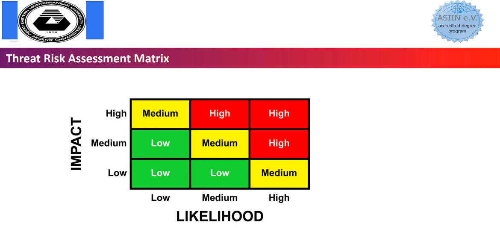
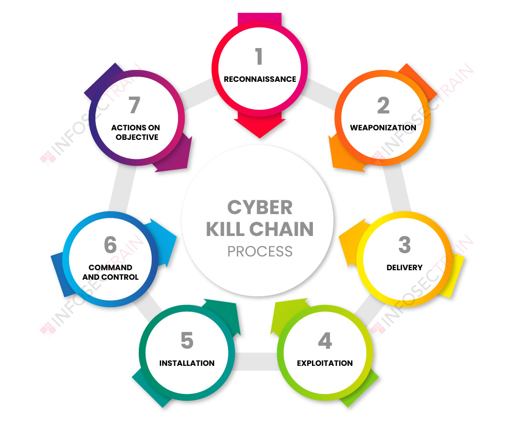
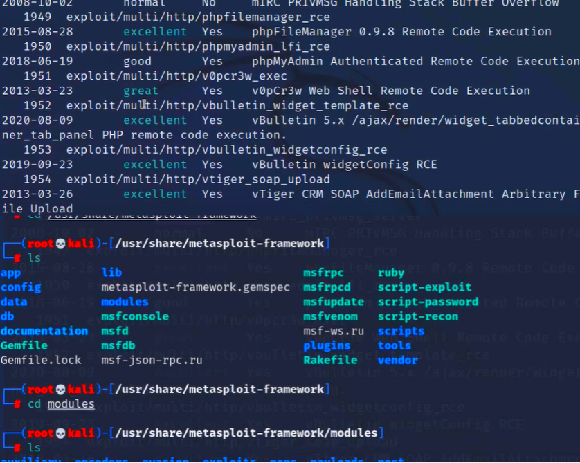
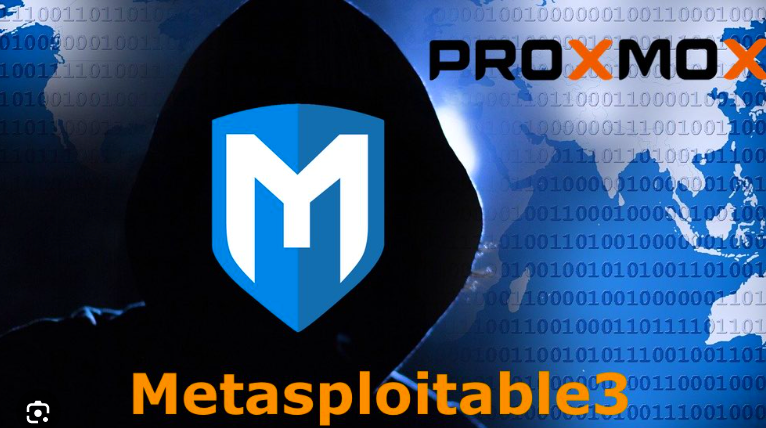

ACT-3
As you understand there are many ways for hacking and disturbing people. We can evaluate this threats with using "Threat Risk Assessment Matrix" That tool is very useful for detecting level of threats. Namely to hack a banking system and to do Dos attack are not same with each other , they have different affect areas , one of them are more sensitive , it includes financial data , some important informations of someone etc. We seperate the threats by analyzing their styles , level of dangerous thanks to by Threat Risk Assessment Matrix. If i need to explain it with examples. Hacking a university system and hacking a student's system. Of course both of them are illegal and bad things, but if you hack a student you can access his/her student id , country, department, age, and names etc. but if you hack a system of university you will get same infrmations and teacher's informations, financial positions, exam questions, and a lot of datas more. Hacking a student is low risk but hacking a university is higher than a student. We evaluate it with "Threat Risk Assessment Matrix". If we want to protect ourselves from these threats we can use the "Cyber Kill Chain Model" Let's learn it.
The Cyber Kill Chain Model , actually we met this concept week 2 but i wanted to put it this activity because there is a strong connection between (CKC) and DOS Attacks.
CKC Model is like war and defense planning if we can apply it we can defense ourselves or attack other person with it.
This model's goal is protect and keep safe the people. According to my searches the steps of (CKC) model can be different a little bit , but the purpose is the same.
Phase 1: Reconnaissance
During the Reconnaissance phase, a malicious guy identifies a target and explores vulnerabilities and weaknesses that can be exploited within the network.
So attacker tries to choose a target for exmaple someone dropped his credit kard we do not knw it's password but we know that guy we decided to hack that.
Phase 2: Weaponization
During the Weaponization phase, the attacker creates an attack vector, such as remote access malware, ransomware, virus or worm that can exploit a known vulnerability. (If attacker has good technical skills , he/she can creates softwares but if no technical skills so much attacker can use other softwares we named that attackers cracker)
Phase 3: Delivery
In the Delivery step, the intruder launches the attack. For example, the attacker may send email attachments or a malicious link to spur user activity to advance the plan. This activity may be combined with social engineering techniques to increase the effectiveness.
Phase 4: Exploitation
In the Exploitation phase, the malicious code is executed within the victim’s system.
Phase 5: Installation
Immediately following the Exploitation phase, the malware or other attack vector will be installed on the victim’s system. This is a turning point in the attack lifecycle, as the threat actor has entered the system and can now assume control.
Phase 6: Command and Control
In Command & Control, the attacker is able to use the malware to assume remote control of a device or identity within the target network. In this stage, the attacker may also work to move laterally throughout the network, expanding their access and establishing more points of entry for the future.
Phase 7: Actions on Objective
In this stage, the attacker takes steps to carry out their intended goals, which may include data theft, destruction, encryption or exfiltration.
I want to explaint The Metasploits. The Metasploit framework is a very powerful tool which can be used by cybercriminals as well as ethical hackers to probe systematic vulnerabilities on networks and servers. So we use it to catch the weakness of systems. In our class we tried the metasploits.

By the way metasploits are not just for direct attacks we can create backdoors by using it. There is a really useful command named "Search" for example you wrote search windows on the screen the tools will display you payloads. As you see above i searched for windows and using ls command i access the file of modules. Even you can display crimes about exploits know by goverments.

Also i want to explain what is payloads becuase the are critic. Generally exploits provide to enter the system
After goning inside the second thing are payload. They provide for attacker do what he or she want. For example i hacked your computer
and i want to get your voice by activate your mic. That is exactly work of payload and developers use the asembly langue while develop them.
There are 2 types of payloads Stages (It creates the way between victems and attacker it must be powerful) ,
Stagers(Main point is here attacker can do what he or she want with this type for examle getting files.) , Singles (It works alone they can do connecting and other process same time).
In conclusion Threat Risk Assessment Matrix is a guide for showing us level of threats as i understand a lot of big companies
apply preventions according it. The another reflecion is Cyber Cyber-Kill-Chain-Model is designed for war (Defense and Attack)
Lot's of Cyber Security staff use it often and they prepares the plans according to Cyber-Kill-Chain-Model.